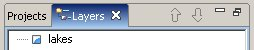

7 Fenster und Editoren anordnen
Fenster und Editoren anordnen
Dieser Abschnitt erklärt, wie sich Fenster und Editoren anordnen lassen, um so das Layout der Arbeitsfläche eigenen Bedürfnissen anzupassen.
Aufräumen
Zuvor ist jedoch ein wenig Ordnung vonnöten.
Beginnen Sie, in dem Sie Fenster > Perspektive zurücksetzen auswählen und dies mit OK bestätigen. Das wird die aktuelle Perspektive(Fensteranordnung) in ihren Ursprungszustand zurücksetzen.
Stellen Sie für dieses Tutorial sicher, daß Sie Editoren für Seen (lakes) und Flüsse (rivers) geöffnet haben. Schließen Sie alle anderen Editoren.
Mauszeiger bei Drag und Drop
Drop cursors indicate where it is possible to dock views in the Workbench window. Several different drop cursors may be displayed when rearranging views.
 |
Darüber/darunter andocken. Wird die Maustaste in diesem Zustand losgelassen, wird das Fenster oberhalb bzw. unterhalb dessen angeordnet, über dem sich der Cursor gerade befindet. |
| |
Links/rechts andocken. Wird die Maustaste in diesem Zustand losgelassen, wird das Fenster links bzw. rechts von demjenigen angeordnet, über dem sich der Cursor gerade befindet. |
|
Stapeln: Wird die Maustaste in diesem Zustand losgelassen, erscheint das Fenster als eine mehrerer Registerkarten — an der gleichen Stelle wie die bereits vorhandenen Fenster unter dem Cursor. |
Fenster anordnen
Die Position des Projektfensters kann (als Beispiel) wie folgt verändert werden:
- Klicken Sie auf die Titelzeile des Projektfensters und ziehen Sie das Fenster über die Arbeitsfläche. Lassen Sie die Maustaste gedrückt.
- Beobachten Sie die verschiedenen Mauszeiger. Diese Symbole (siehe vorherigen Abschitt) zeigen an, wo das Fenster andocken könnte - relativ zu dem Fenster, das sich beim Loslassen der Maustaste gerade unter dem Cursor befindet. Beachten Sie bitte auch, daß ein rechteckiger Rahmen zusätzlich optisch signalisiert, wie das Fenster andocken wird.
- Docken Sie das Fenster irgendwo auf der Arbeitsfläche an und betrachten Sie das Ergebnis der Aktion.
- Ziehen Sie auf diese Weise zur Probe die Titelzeile des Fenster an eine andere Stelle am Arbeitsplatz.
- Ziehen Sie abschließend das Projektfenster auf das Layerfenster. Ein Stapelcursor wird angezeigt. Wird die Maustaste losgelassen, werden Projektfenster und Layerfenster als Karteikarten gestapelt.
Editoren anordnen
Die Arbeitsfläche gestattet es, mehrere Sets von Editoren im Editorbereich anzuzeigen. Auch kann deren Größe geändert werden. Es ist jedoch nicht möglich, andere Fenster in den Editorbereich zu ziehen. (Sie werden dann darüber, darunter oder seitlich davon angeordnet.)
- Öffnen Sie mindestens zwei Editoren im Editorbereich, indem Sie beispielsweise im Projektfenster auf Karten doppelklicken.
- Ziehen Sie (an der Titelzeile, dem Reiter) einen der Editoren aus dem Editorbereich. Halten Sie die Maustaste gedrückt.
- Ziehen Sie mit noch gedrückter Maustaste den Editor über den Editorbereich, speziell über dessen vier Kanten und die Mitte. Im Randbereich erscheinen die Pfeilsymbole und in der Mitte der Stapel-Cursor.
- Docken Sie die beiden Editoren nebeneinander, indem Sie die Maustaste loslassen, wenn ein Pfeilsymbol angezeigt wird.
- Die beiden Editoren können jetzt auch in ihrer Größe angepaßt werden. Gleiches gilt auch für den gesamten Editorbereich.
- Es ist auch interessant, de Farbe der Editor-Reiter zu beobachten. Im Bild unten existieren zwei Editorgruppen untereinander.
- Blau – zeigt den aktiven Editor
- Weiß (in Windows weiß-grau) – zeigt, daß der Editor der zuletzt aktive Editor war. Sollte ein anderes Fenster den Fokus besitzen (aktiv sein), so ist dies der Editor, dessen Inhalt das aktive Fenster gerade darstellt oder bearbeitet. Dies ist für Fenster wie "Outline" oder "Eigenschaften" relevant, deren Inhalte eng mit einem Editor verbunden sind.
- Ziehen Sie den Editor an eine andere Stelle des Editorbereichs und beachten Sie Sie die Ergebnis des Andockens und/oder des Änderns deren Größe. Setzen Sie dies fort, bis Sie die Arbeitsfläche nach Ihren Wünschen angeordnet haben.
Das untenstehende Bild zeigt das Layout zweier Editoren, von denen einer unter dem anderen angedockt wurde.

Gestapelte Fenster anordnen
Zusätzlich zum Drag und Drop innerhalb der Arbeitsfläche kann auch die Reihenfolge der Fenster innerhalb eines Fensterstapels (Registerkarten) verändert werden.
- Wählen Sie Fenster > Perspektive zurücksetzen um die Perspektive wieder in die ursprüngliche Anordnung zu versetzen.
- Klicken Sie auf die Titelzeile des Layerfensters und ziehen Sie es auf das Projektfenster.
- Klicken Sie auf den Reiter "Projekte" und ziehen Sie ihnauf die Fläche rechts vom Reiter "Layer".
- Dort angekommen, sollte der Cursor das Stapelsymbol zeigen. Lassen Sie dann die Maustaste los.

- Nun ist der Projekt-Reiter rechts vom Layer-Reiter.

Maximieren
Manchmal ist es nützlich, einen bestimmten Editor oder ein Fenster zu maximieren. Das geht ganz einfach:
- Doppelklicken Sie zum Maximieren eines Fensters oder Editors entweder auf dessen Reiter oder wählen Sie Maximieren aus dem Popupmenü des Reiters.
- Ganz genauso läßt sich der ursprüngliche Zustand auch wieder herstellen. (Doppelklicken oder im Popupmenü Wiederherstellen auswählen.)
Weiter im Tutorial: 8 Mit Schnellsichten arbeiten
(c) Copyright (c) 2004-2008 Refractions Research Inc. and others.